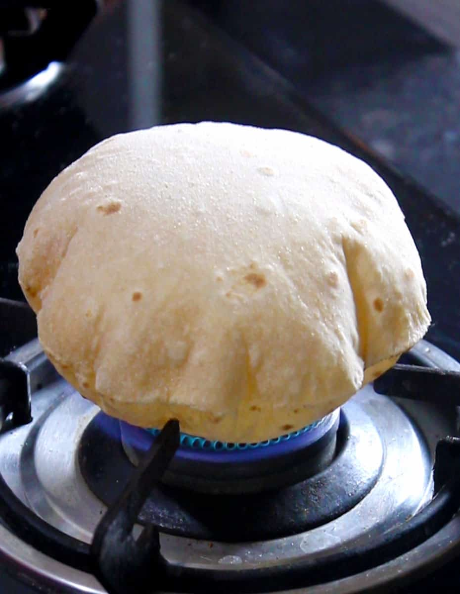

Home
How to make a Roti smooth like butter?

Description
Hello readers of this webpage, in today's edition of creating with Mr. Creator we'll learn about how to make a Roti.
A roti is a form of bread very popular in northern part of India.
Ingredients
- Wheat Flour - 500 g
- Water - 250 ml
- Salt - 1 tbsp
Steps
- Take the wheat flour and 1 tbsp salt in it.
- Slowly add water in the flour while mixing both water and flour.
- Make a dough.
- Make small dough balls from the dough.
- Using those dough balls create circular discs using a rolling pin.
- Now, take a flat pan and put it on the gas stove.
- After the pan has become adequately hot, put the roti on it.
- Cook the roti from both the sides by flipping it after every few seconds.
- One the roti is moderately cooked, remove the pan from the stove and cook the roti directly on the flames.
- Your roti is ready, serve is hot with sabji and ghee.